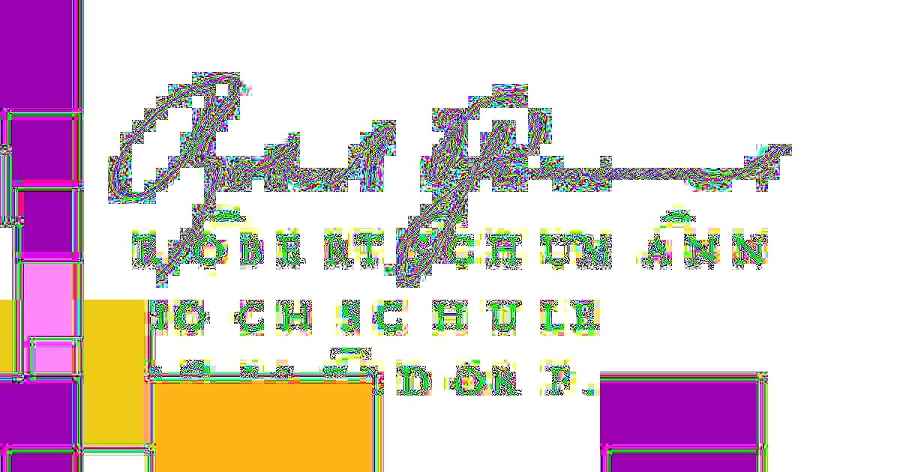

Programmierkurs Python¶
Sitzung 4 - Medien¶
Bilder¶
Python bietet viele Möglichkeiten Bilder zu bearbeiten. Dafür werden wir die Bibliotheken skimage, matplotlib und imageio benutzen die auf numpy, eine Numerik Bibliothek für Python, basieren.
Installiert euch deshalb diese Bibliotheken indem ihr folgendes in eine Shell eingibt
pip3 install scikit-image imageio numpy matplotlib
Aufbau eines digitalen Bildes¶

https://brohrer.github.io/convert_rgb_to_grayscale.html
Damit wir Bilder in Python laden können müssen wir die installierten Bibliotheken nun importieren mittels import, wobei import .. as .. die Bibliothek unter einem Synonym importiert - dies macht man um sich Schreibarbeit zu sparen.
# importieren der bibliotheken
import imageio
import matplotlib.pyplot as plt
import numpy as np
import skimage
# sagt jupyter das er die bilder im notebook anzeigen soll
%matplotlib inline
Ein Bild können wir nun mittels imageio laden - d.h. das Bild wird in RGB Werte umgewandelt - hier laden wir das bild rsh_logo.jpg was im selben Verzeichnis liegt in dem wir das Jupyter Notebook gestartet haben.
Diese RGB Daten können wir mit plt.imshow anzeigen.
image = imageio.imread('rsh_logo.jpg')
plt.imshow(image);
Ein Farbbild hat 3 Dimensionen - zu einem haben wir die 2 Dimensionen auf denen das Bild sich abbildet (x, y) und die Farbdimension (z), in der die RGB Werte hinterlegt werden.
: ist eine Wildcard für alle Werte einer Dimension - in unserem Fall die Farbdimension
# image.shape zeigt die dimensionsgrößen des bildes an
print(f'Das Bild hat die Dimensionsgrößen {image.shape}')
print(f'RGB Werte an x=0, y=0 ist {image[0, 0, :]}')
Das Bild hat die Dimensionsgrößen (630, 1200, 3)
RGB Werte an x=0, y=0 ist [255 255 255]
Wir können diese slicing (siehe Sitzung 1) Schreibweise für Arrays benutzen um uns nur einen Ausschnitt des Bildes anzeigen zu lassen
# zeigt alle pixel zwischen x 200 bis 400 an und y von 200 bis 300
plt.imshow(image[200:300, 200:400, :])
<matplotlib.image.AxesImage at 0x11a34b950>
Wir können auch diese Schreibweise nutzen um einem bestimmten Bereich von einem Bild eine Farbe zuzuordnen
image[200:220, 100:1000] = [200, 0, 255]
plt.imshow(image)
<matplotlib.image.AxesImage at 0x11a3bfcd0>
Wir können auch programmatisch Muster auf dem Bild erzeugen z.B. mithilfe einer for Schleife
for i in range(10):
image[
200 + i * 10:200 + i*40,
100 + i * 100: 1100,
:
] = [255, 1/10* i * 255, 0]
plt.imshow(image)
<matplotlib.image.AxesImage at 0x11a42cf50>
Wir können dieses Bild nun mithilfe von imageio.imsave von RGB Daten in ein PNG Bild speichern.
imageio.imsave('rsh_new.png', image)
Wir können nun dieses Bild auch 100 mal laden und abspeichern als JPG um die zerstörerische Kraft der JPG Kompression zu verdeutlichen, ähnlich zu needsmorejpeg.com.
Dazu müssen wir im Jupyter Notebook Ordner einen neuen Ordner erzeugen namens rsh was wir in der Shell mithilfe des Kommandos
mkdir rsh
erreichen.
In diesem Ordner wollen wir nun die 100 Versionen des RSH Logos abspeichern.
Mithilfe von imageio.help() wissen wir aus der Dokumentation das wir die Stärke der JPEG Kompression einstellen können.
imageio.help('rsh.jpg')
JPEG-PIL - JPEG (ISO 10918)
A JPEG format based on Pillow.
This format supports grayscale, RGB and RGBA images.
Parameters for reading
----------------------
exifrotate : bool
Automatically rotate the image according to exif flag. Default True.
pilmode : str
From the Pillow documentation:
* 'L' (8-bit pixels, grayscale)
* 'P' (8-bit pixels, mapped to any other mode using a color palette)
* 'RGB' (3x8-bit pixels, true color)
* 'RGBA' (4x8-bit pixels, true color with transparency mask)
* 'CMYK' (4x8-bit pixels, color separation)
* 'YCbCr' (3x8-bit pixels, color video format)
* 'I' (32-bit signed integer pixels)
* 'F' (32-bit floating point pixels)
PIL also provides limited support for a few special modes, including
'LA' ('L' with alpha), 'RGBX' (true color with padding) and 'RGBa'
(true color with premultiplied alpha).
When translating a color image to grayscale (mode 'L', 'I' or 'F'),
the library uses the ITU-R 601-2 luma transform::
L = R * 299/1000 + G * 587/1000 + B * 114/1000
as_gray : bool
If True, the image is converted using mode 'F'. When `mode` is
not None and `as_gray` is True, the image is first converted
according to `mode`, and the result is then "flattened" using
mode 'F'.
Parameters for saving
---------------------
quality : scalar
The compression factor of the saved image (1..100), higher
numbers result in higher quality but larger file size. Default 75.
progressive : bool
Save as a progressive JPEG file (e.g. for images on the web).
Default False.
optimize : bool
On saving, compute optimal Huffman coding tables (can reduce a few
percent of file size). Default False.
dpi : tuple of int
The pixel density, ``(x,y)``.
icc_profile : object
If present and true, the image is stored with the provided ICC profile.
If this parameter is not provided, the image will be saved with no
profile attached.
exif : dict
If present, the image will be stored with the provided raw EXIF data.
subsampling : str
Sets the subsampling for the encoder. See Pillow docs for details.
qtables : object
Set the qtables for the encoder. See Pillow docs for details.
image = imageio.imread('rsh_new.png')
for i in range(100):
file_name = f'rsh/rsh_{i}.jpg'
imageio.imsave(file_name, image, quality=100-i)
image = imageio.imread(file_name)
Das resultierende Bild ist
